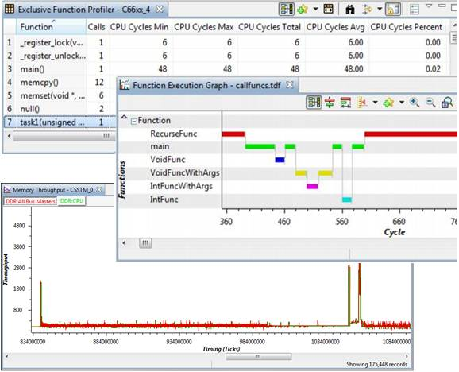

Trace Analyzer provides real-time non-intrusive hardware instrumentation solutions for system optimization and for isolating difficult-to-find problems. Varying hardware tracing capability exists for C6000, Cortex-A and Cortex-M devices.
Debug and Analysis features (depending on target capability) includes:
Trace Analyzer is available from Code Composer Studio Tools Menu.
User Guide is available in Code Composer Studio help and on the Trace Analyzer wiki page, here.
